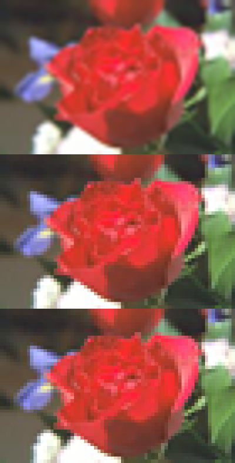
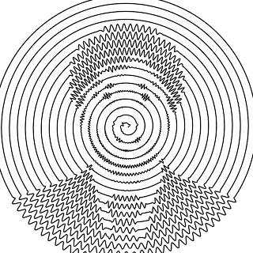

At that time, I faild because I didn’t know how to zoom images. But, now I know magick package. Let’s try again…
Zoom images by magick
We can enlarge a image by either image_resize(), image_scale(), or image_sample(). I don’t know about the details of the differences, but it seems image_resize() does better for my purpose.
rose <-image_convert(image_read("rose:"), "png")roses <-c(image_resize(rose, "400x"),image_scale(rose, "400x"),image_sample(rose, "400x"))image_append(roses, stack =TRUE)

But, zooming is not just about resizing; I want to focus on the center of the image as well. To do this, we can use image_crop(). But, it’s our job to calculate the perper offset to centering the image (IIUC, there’s no equivalent of -gravity center in magick package, right??).
Suppose we want to zoom by 200%. First of all, extract the original width and height.
info <-image_info(rose)orig_width <- info$widthorig_height <- info$height
Then, let’s calculate the offset; to center the image, the offset should be half of the diffrence between the original size and the size you want.
The list of images can be combined by image_join() and then can be converted to an animation by image_animate()
imgs %>%image_join() %>%image_animate(fps =50)
Result
Aparently, there are a lot of things to explain (expecially about involute of a circle), but it would be a bit too long… Let’s jump to the final version of my code and the result :P
library(ggplot2)library(tibble)library(dplyr, warn.conflicts =FALSE)# the speed of involute increases uniformly; in order to make the lengths between# steps equal, we need to calculate the square rootresolution_of_involute <- 10000Lt <-sqrt(seq(0, resolution_of_involute) / resolution_of_involute)coil_turns <- 17Lmax_r <- coil_turns *2* pi# waviness of the coilwave_frequency <-100wave_height_base <- pi# download and read the imageimg_file <-tempfile(fileext =".png")download.file("https://hoxo-m.com/img/team/makiyama.png", destfile = img_file, mode ="wb")img_orig <-image_read(img_file)# convert to grayscaleimg_bw <- img_orig %>%image_convert(type ="grayscale") %>%image_modulate(brightness =160) %>%image_contrast(10)# the width and height of the outputw <-320h <-320# the width and height of the original imageinfo <-image_info(img_bw)w_orig <- info$widthh_orig <- info$height# the width and height of the zoomed imagescale <- 30Lw_big <- w_orig * scaleh_big <- h_orig * scale# zoom imageimg_bw_big <-image_resize(img_bw, sprintf("%dx%d", w_big, h_big))# place the small image on the center of the big imageimg <-image_composite(img_bw_big, img_bw,offset =sprintf("%+d%+d",as.integer((w_big - w_orig) /2),as.integer((h_big - h_orig) /2)))draw_hoxom <-function(rotation =0, zoom =1) {# unwavy involute d <-tibble(radius =2* pi * t * coil_turns,phi = radius - rotation,.x =cos(phi) + radius *sin(phi),.y =sin(phi) - radius *cos(phi) )# crop and resize the image at the specified zoom level g <-sprintf("%dx%d%+d%+d",as.integer(w_big / zoom),as.integer(h_big / zoom),as.integer((w_big - w_big / zoom) /2),as.integer((h_big - h_big / zoom) /2)) blackness <- img %>%image_crop(g) %>%image_resize(sprintf("%dx%d", w, h)) %>%image_data("gray")# calculate which pixel each point falls in x_idx <-as.integer(scales::rescale(d$.x, from =c(-max_r, max_r), to =c(1L, dim(blackness)[2]))) y_idx <-as.integer(scales::rescale(d$.y, from =c(-max_r, max_r), to =c(dim(blackness)[3], 1L)))# determine the wave height based on the blackness wave_height <- (255-as.numeric(blackness[cbind(1, x_idx, y_idx)])) /256* wave_height_base# wavy involute d_wavy <- d %>%mutate(x = .x + wave_height *sin(phi * wave_frequency) *sin(phi),y = .y - wave_height *sin(phi * wave_frequency) *cos(phi) ) p <-ggplot(d_wavy) +geom_path(aes(x, y)) +theme_minimal() +coord_equal(# 0.85 is for zoomxlim =c(-max_r, max_r) *0.85,ylim =c(-max_r, max_r) *0.85 ) +theme_void()print(p)}imgs <-image_graph(w, h, res =72)steps <-100for (i inseq_len(steps)) {draw_hoxom(2* pi * i / steps, 1+ (scale -1) / steps^2* i^2)}dev.off()
png
2
image_animate(imgs, fps =50)

I’m grad I’ve finally proven that I can live without Mathematica!